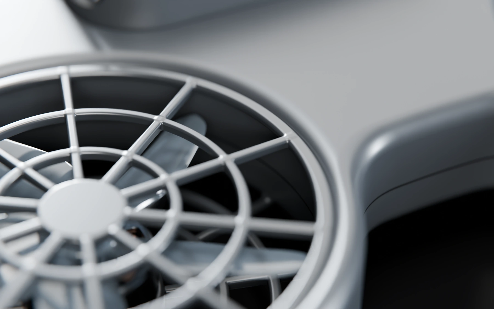

Nobody gets hurt.
Including the person holding the weapon. Wisp is a tool for getting away, and every design decision starts there.

Six rules we build to.
Written into the hardware where possible, and into the software where not.
- 01
No payload. Ever.
Wisp carries no projectile, spray, blade or charge, and the airframe has no mount that could take one.
- 02
Light within limits.
Peak output is set for the closest distance Wisp flies to a face, and the beam stays on only while the camera sees a face at a safe range.
- 03
Gentle by default.
The default beam is steady, with a slow pulse below 3 Hz. Fast strobe is a separate mode that runs in short bursts and is off out of the box.
- 04
Guarded rotors.
Every rotor sits in a duct with guards on both faces, and the rotors stop the moment Wisp is grabbed or tumbles.
- 05
The wearer decides.
Nothing happens without a deliberate two-stage press on the clasp, and a two-second hold ends a deployment at any time.
- 06
A record, kept private.
Each deployment is logged with time, place, flight path and a short clip, encrypted on the device and shared only by the wearer.
Measured, then measured again.
Safety claims are only as good as the tests behind them. Ours run in three stages, and each one has to pass before the next begins.
- Now · Bench
Light and flight
Photometry at every pattern distance, endurance at full light, and drop, grab and swat tests on flying prototypes.
- Next · Field
Supervised trials
Trials with professional security teams in controlled settings, with every deployment reviewed.
- Then · Independent
Outside review
Third-party testing of eye safety, electrical safety and flight safety before Wisp is offered to anyone.
The hard ones.
Is Wisp a weapon?
No. It carries nothing that can injure anyone. It is a bright light that flies, designed to make aiming very hard for long enough to leave.
Can the light damage someone's eyes?
It is designed not to. Output is limited for the closest distance Wisp flies to a face, and the beam turns off whenever the camera loses the face or the range gets too short. Independent eye-safety testing comes before any sale.
What about people with photosensitive epilepsy?
The default light is steady with a slow pulse, well below the flash rates linked to seizures. The fast strobe is a separate mode the wearer has to turn on, and it runs only in short bursts.
Could someone use Wisp to harass people?
It launches only from its own harness and only after a deliberate press. It can't be flown like a hobby drone, carries nothing harmful and logs every deployment.
What if someone grabs it or knocks it down?
The rotors stop the moment it is held or tumbles. It is built to survive a fall, and it pairs only with its own harness.
Is it legal to carry and fly?
Rules on drones and self-defense tools vary by country and city. We are working with regulators ahead of any sale, and Wisp will only be offered where it can be carried and used legally.
Does it record me or bystanders?
Wisp records only while deployed. Clips stay encrypted on the device and are never uploaded unless the wearer chooses to share them.
When can I get one?
Not yet. Wisp is in development and not for sale. Prototypes go to professional security teams first.